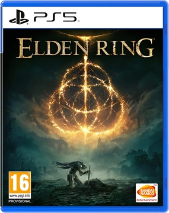

Elden Ring
Elden Ring
Productbeschrijving
ELDEN RING is de meest ambitieuze fantasy action-RPG ooit gemaakt door FromSoftware en geproduceerd door BANDAI NAMCO Entertainment. Het verhaal speelt zich af in Lands Between, waar de Elden Ring, de vitale bron van de Erdtree, is gebroken. De speler moet de scherven van de Elden Ring verzamelen en de Elden Lord worden om de wereld te redden. Lands Between is een nieuwe fantasywereld bedacht door Hidetaka Miyazaki en George R.R. Martin, vol met uitdagende vijanden en majestueuze plekken om te ontdekken. De gameplay is volledig aanpasbaar met een breed arsenaal aan wapens en technieken om uit te kiezen, en spelers kunnen samenwerken met anderen of hun wereld binnen laten dringen. De game is speelbaar op PS4, PS5, Xbox One, Xbox One X, Xbox One S, en Xbox Series X, met een gratis upgrade beschikbaar voor de PS5-versie en Smart Delivery ondersteund voor Xbox.
€69,99
Aanbevolen producten

Godfall
€39,98

Just Dance 2022
€39,98

FIFA 23
€59,99